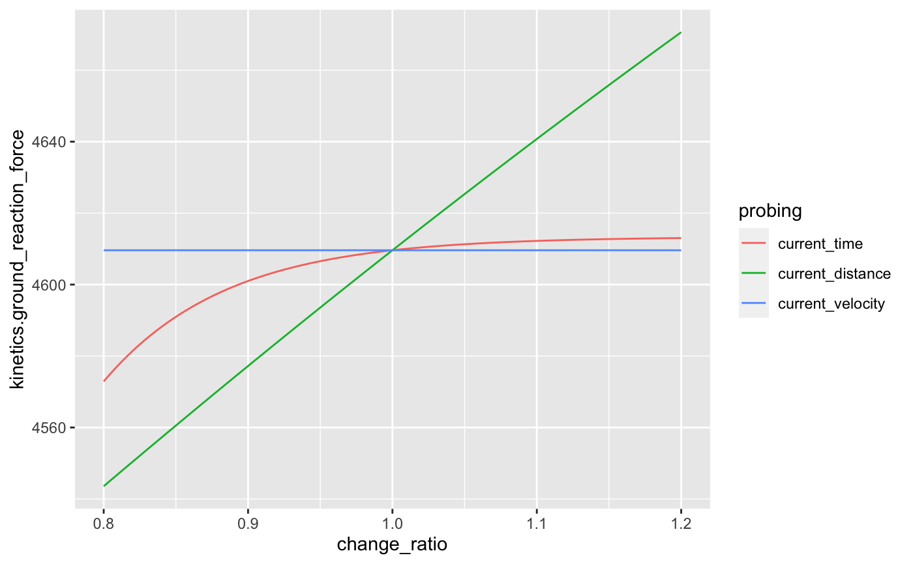

Get Probing Data
get_probing_data( args_list, probe_func = function(...) { }, change_ratio = seq(0.8, 1.2, length.out = 100), aggregate = "raw", ... )
| args_list | Named list with initial arguments to be passed to |
|---|---|
| probe_func | Function that returns a list of outputs |
| change_ratio | Numeric vector indicating the probing initial arguments in |
| aggregate | String. Indicates how should output from |
| ... | Extra arguments for |
Data frame
require(ggplot2)#>fgen_probe_data <- get_probing_data( args_list = list(current_time = 0.3, current_distance = 0.1, current_velocity = 0), probe_func = function(...) { fgen_get_output(...) }, aggregate = "raw", mass = 70, max_force = 5000 ) ggplot( fgen_probe_data, aes( x = change_ratio, y = kinetics.ground_reaction_force, color = probing ) ) + geom_line()